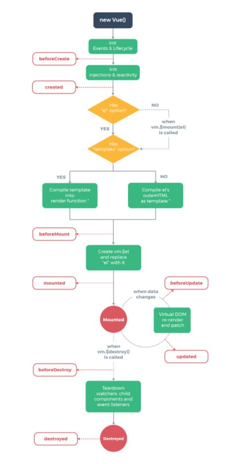

A beginner's first view into Vue.js. Pun intended...
About Heath Murphy, PMP, MCSD
- I'm a solution architect working for a pretty kick ass consulting company, HMB
- I do a little bit of everything
- I live in Columbus, Ohio therefore that makes me a huge Ohio State Buckeye fan. It's a state law!
- I like Cats
- I Pumpkin Beer
- And yes... I look very much like these guys:


Agenda
- What is Vue.js and how does it compare?
- Getting Started
- Hello World - Vue.js Basics
- Components
- Vue.js as a SPA using official Plugins
What exactly is Vue.js?

Vue is a progressive front-end JavaScript framework that focuses on... well... the view.
- Templates (Html-ish), Reactivity (2-way binding), Components (widgets)
- Progressive - Use as little or as much as you like. Very little opinions.
- You can drop it into your .Net or Java project with a simple script tag!!
- Uses a virtual DOM, all the rage these days
- Uses "official" (and unofficial) plugins to become a full featured SPA
- Supports most modern tooling and build systems, Webpack, Gulp, etc.
Quick History Lesson... Vue.js has it's roots in AngularJS. The best parts were "extracted out".
Comparison of Frameworks
| Framework | Type | Languages | Documentation/Popularity |
|---|---|---|---|
| Vue | Library | JavaScript & Html | Newest, great site, gaining pop |
| React | Framework | JavaScript & JSX | Hugely popular |
| Angular | Framework | TypeScript & Html | Backed by big companies |
| AngularJS | Framework | JavaScript & Html | Oldest, tons of help available |
Verdict
Don't use AngularJS on new projects. Consider using Angular if your team loves TypeScript (which is great!) and wants a full featured and opinionated framework. React is uber popular and arguably more complex than Vue. Use Vue if you want simplicity that comes with power from official plugins.
Getting Started
https://vuejs.org/

<script src="https://cdn.jsdelivr.net/npm/vue"></script>Install via NPM
$ npm install vueAdd to you package.json for a build framework
"vue": "^2.5.2"Vue provides a CLI (command line interface) to quickly generate new projects from templates and to even serve them up locally via node.js
# install vue-cli
$ npm install --global vue-cli
# create a new project using the "webpack" template
$ vue init webpack my-project
# install dependencies and go!
$ cd my-project
$ npm install
$ npm run dev
Hello World!
Example 1Designed by Freepik
We declare the items that change using {{ mustache }} and the DOM becomes reactive.
These are arguably one of the best parts of AngularJS that were incorporated into Vue. They instruct the Vue engine to perform
various transforms based upon how they are used. Most directives are prefixed with
v- ... The Vue guys got it right as opposed to the Angular guys...
ng-
*scratches head
v-if you are enjoying this talk
v-for friend in your friends
friend.tell(them about Vue.js)
while(!button.isBeingClicked){
sleep(100);
}
// The button is clicked!
// Just kidding =)
Example 10
Example 11

Example 12
Using JavaScript to manipulate css classes is so super common that Vue has helpers.... well to help you =)
Example 13
Example 14
Example 15
Let's sprinkle in a little bit of unicorn dust... A little bit of two-way automagic binding/p>
Example 16
Example 17
Example 18
Computed properties allow you to "do more" with your bound values without calling a function. Benefit??? Vue caches and handles dependencies
Example 19Watchers are more generic and allow us to react to changes by making asynchronous calls. AJAX
Example 20Components are all the rage these days... They are old skool. Let me show what we're going to build for the rest of
this talk...
My D&D Sheet
All Vue components are also Vue instances
Components can be created and scoped Global or locally
Example 22We pass props... properties down to child components.
Example 23Example 24
Child components can Emit up events to their parents
Example 25
Slots allow for custom parent content to be injected into the child
Example 26
Vue SPA!
- The .vue file
- Build Tools
- Debugging (Vue Chrome Plugin)
- Vue-router
- Vee-validate
- Vuex... if we have time